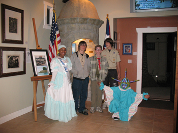
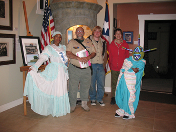
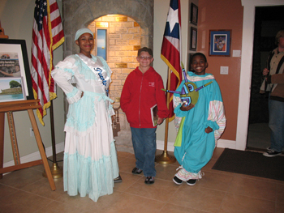

HOME
Boys Scout Troop 95 from Tierra Santa Visits HPRSD Casita by Emily Velez-Confer |
|
On a cool Tuesday evening, the young men and boys from the Boy Scout Troop 95 Tierra Santa toured some of the House of Pacific Relations cottages thanks to the effort and arrangement made by Beth Connelly from the House of Ireland. When the email arrived to our attention at the House of Puerto Rico there was no way that I was not going to make the extra effort to support her and the Boy Scouts. So quickly I responded and asked for more details. Boy Scout Troop 685 visiting the
House of Puerto Rico cottage in Balboa Park. Photo by Emily Velez-Confer. I contact Dee Flores and asked if Eva and Antonio could join me in costume so that the Scouts could see some of our folk traditions, too. Eva wore one of the HPRSD traditional dresses and Antonio wore his vejigante costume. The Flores family were super generous, an extra special effort was made due to the fact that Eva was under the weather and not feeling well. The scouts were to come by the different houses between 7 and 8 p.m. in small groups and the reason for their visit was that they had a project to learn about different cultures. Eva and Antonio Flores showing traditional I so happened to have the front cover of the El Nuevo Dia (Puerto Rican newspaper) from March 20 where our astronaut Joseph Acaba was on the cover, photographed in the space shuttle just after being awakened by Que Bonita Bandera - a song honoring our Puerto Rican Flag. I had this on display and found online the music with lyrics which I played for them. I also shared with them what the Garita in the casita was used for and showed them a photo that we had of one on El Morro. They also viewed the Holiday theme display, letting them know what types of materials were used to make some of them, paper towels, coffee beans and nails. Some stopped to view the DVD that I had running, and one or two of our guests recognized places in Puerto Rico because they had been there. Later Antonio and I went off to the House of Ireland to get hot chocolate for him and Eva and one of the older scouts told him that he really was impressed with his vejigante mask. He asked how long it took and Antonio looked at me and I said about 2 -3 hours. The young man said he could not have done such a fine job in that time. The adults, young men and boys and family members present were very appreciative of all the houses that made this extra effort to open for them. We, of course, were very honored!   Message from BSA Troop 985 Thank you for not only taking and sending these photos but for your hospitality last Tuesday during our visit. We had a great time and felt privileged to be able to visit at a time when you are usually closed to the public.
|